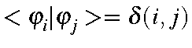

| Energy Level | Molecular Orbital Coefficients | |||||
| 1 | 2 | 3 | 4 | 5 | 6 | |
| 6 -0.4857 | 0.4082 | -0.4082 | 0.4082 | -0.4082 | 0.4082 | -0.4082 |
| 5 -1.8388 | 0.5774 | -0.2887 | -0.2887 | 0.5774 | -0.2887 | -0.2887 |
| 4 -1.8388 | 0.0000 | 0.5000 | -0.5000 | 0.0000 | 0.5000 | -0.5000 |
| 3 -6.9317 | 0.5774 | 0.2887 | -0.2887 | -0.5774 | -0.2887 | 0.2887 |
| 2 -6.9317 | 0.0000 | 0.5000 | 0.5000 | 0.0000 | -0.5000 | -0.5000 |
| 1 -14.8670 | 0.4082 | 0.4082 | 0.4082 | 0.4082 | 0.4082 | 0.4082 |
These form a normalized, orthogonal set. Under the NDDO approximation,
overlaps between different atomic orbitals are ignored, i.e.,
,
so instead of